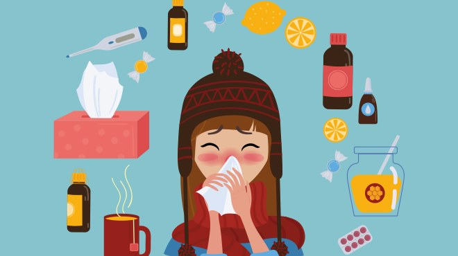
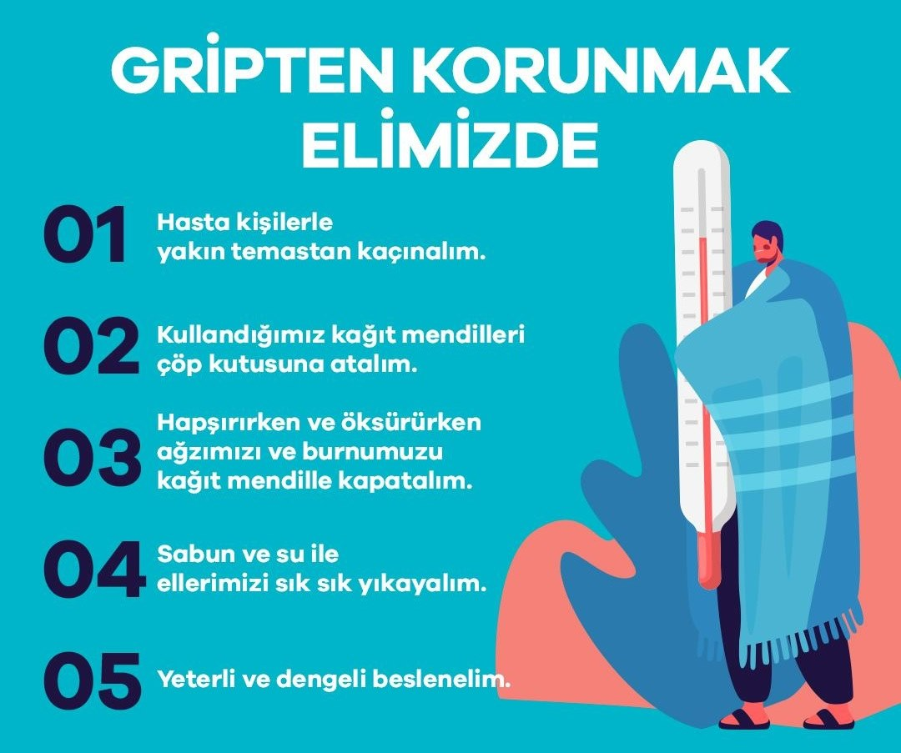

MEVSİMSEL GRİP VE SOĞUK ALGINLIĞI
MEVSİMSEL GRİP
Grip influenza virüsünün neden olduğu yıl içinde sonbahar mevsiminin sonunda, kış ve ilkbahar aylarının başında daha sık görülen ve oldukça bulaşıcı bir hastalıktır. Her yıl aynı aylarda beklenen sayıda kişide görülmesinden dolayı da mevsimsel grip denir.
DOMUZ GRİBİ
Bazı hayvanlarında kendilerine ait grip virüsü vardır ve hayvanlarda da grip hastalığı görülebilmektedir. Genellikle insanlara bulaşması beklenmez. Ancak bazen hayvanlardaki grip virüsü mutasyona uğrayarak insanlara bulaşabilir ve hastalık oluşturabilmektedir. Domuz gribi virüsü de 2009 yılında Meksika’ da bu şekilde insanlara bulaşıp daha sonra da insandan insana yayılarak çok fazla insanı etkilemiş ve tüm dünyaya yayılmış salgına neden olmuştur. 2009 yılındaki bu salgın domuz gribi olarak adlandırılmıştır. Domuz gribi virüsü de mevsimsel grip olarak yerini almıştır.
BELİRTİLER NELERDİR?
- ATEŞ !
- titreme
- kuru öksürük
- boğaz ağrısı
- burun akıntısı
- burun tıkanıklığı
- baş ağrısı
- kas ağrısı
- eklem ağrısı
- şiddetli halsizlik
- ishal
- kusma
Bu belirtilerden bir veya birkaçı görülebilir. Belirtiler virüs vücuda girdikten 1-3 gün içerisinde meydana gelir. Ateş genellikle 38°c ve üzerinde seyreder. Çocuklarda kusma ve ishal eşlik edebilir ve daha küçük çocuklarda iştahsızlık, uyku hali ve huzursuzluk görülebilir. Halsizlik grip belirtileri geçtikten sonra bile devam edebilir. Şikayetler ortalama bir hafta kadar sürer ve ilk 2-3 gün içinde şiddetlenir. İyileşme dönemi bir iki hafta sürebilir.
SOĞUK ALGINLIĞI (NEZLE)
Soğuk algınlığı influenza dışında 200 civarında virüsün sebep olduğu daha hafiftir. Burun akıntısı, boğaz ağrısı, halsizlik ile seyreder. Belirtileri gripten daha hafif seyreder. Yavaş başlangıçlıdır ve ateş nadiren görülür. Boğaz ağrısı genellikle ilk belirtidir. Burun akıntısı ve hapşırma sıklıkla görülür. Halsizlik, kas ağrısı, kırgınlık gribe göre daha hafif görülür.
BULAŞMA NASIL OLUR?
Genellikle hasta olan kişilerin öksürme, hapşırma ve konuşması sırasında yayılan damlacıkların sağlıklı kişiler tarafından solunum yolu ile alınması ile bulaşır. Hasta kişinin öksürmesi ve hapşırması ile etrafa influenza yani grip virüsünü içeren milyonlarca damlacık yayılır. Bu damlacıklar hasta bireylerin 1-2 metre uzağına kadar yayılabilir. Bu damlacıkların bulaştığı eşya veya yüzeye temas edildikten sonra ellerin ağız, burun veya göze teması ile bulaşabilmektedir. Tokalaşma, öpüşme yakın mesafe konuşma en önemli bulaş şeklidir. Masa, bardak, kapı kolu vb. yüzeylerde 8 saate kadar canlı kalabilmektedir.
Hasta kişiler belirtiler ortaya çıkmadan bir gün önce ve hastalığın 5. ve 7. günlerine kadar bulaştırabilirler.
GRİPTEN NASIL KORUNULMALIDIR?
Etkili ve güvenli aşılar yıllardır kullanılmaktadır.
Dünya Sağlık Örgütü virüsün değişikliklerini yakından takip edip aşı için yıllık önerilerde bulunur ve her yıl aşı içeriği Dünya Sağlık Örgütü’nün tavsiyeleri ile hazırlanır.
Son yıllarda aşılarda influenza A’nın iki alt tipi ve influenza B’nin bir alt tipi yer almaktadır. Sağlıklı erişkinlerde aşı ile sağlanan koruyucu antikor düzeyi influenza A için % 80’in üzerindedir. Yaşlı kişilerde koruyuculuk daha düşük olmasına rağmen komplikasyonları ve ölümleri azalttığı bilimsel olarak gösterilmiştir. Her yıl mevsimsel gribe neden olan virüs değişebilir ve grip aşının içeriği Dünya Sağlık Örgütü tarafından bir yıl önceki salgın yapan virüs tiplerinin belirlenmesi ile geliştirilmekte ve aşının içeriği de bu uygulama ya bağlı olarak her yıl değişmektedir. Aşının koruyucu etkisi aşı yapıldıktan iki hafta sonra başlar. Grip aşısı ekim ve mart ayları arasında yaptırılmalıdır. Ekim ve kasım ayları en çok tercih edilen aylardır. Aşının koruyucu etkisi 6-8 ay sürer.
Risk grubundaysanız her yıl düzenli aşılarınızı mutlaka yaptırmalısınız.
Sağlık çalışanları, 65 yaş ve üzeri kişiler,2 yaş altı çocuklar, kronik hastalığı olanlar, bağışıklık sistemi baskılanmış kişiler, gebeler, aşırı kilolular, bakım ve huzurevi sakinleri riskli grupları oluşturmaktadır. Grip aşısı gebelikte güvenle kullanılabilir.
Grip aşısı 6 aydan küçük çocuklara, gebeliğin ilk üç ayında, yumurta allerjisi olanlara ve daha önce influenza aşısı yaptırmış ciddi allerji öyküsü olanlara yapılmamalıdır.
Gripten korunmada en önemli yollardan biri de kişisel hijyen kurallarına dikkat etmek ve elleri bol su ve sabun ile yıkanmasıdır.
Kalabalık ortamlardan gerekmedikçe uzak durmak önemlidir. Hasta kişiler ile yakın temastan kaçınılmalıdır. Ağız, burun ve göze kirli eller ile temas edilmemelidir. Ortak kullanılan bulaş olabilecek yüzeylerin temizliği önemlidir. Yüzey temizliğinde deterjan veya çamaşır suyu ile temizlenmesi yeterlidir. Hasta kişiye ait eşyalar yıkanmadan kullanılmamalıdır.
Bebeği olanlar için bebeğinizi beslerken ya da ilgilenirken asla yüzüne doğru öksürüp hapşırmamalısınız. Hasta olmak bebeğinizi emzirmeye engel oluşturmaz. Hasta iseniz mutlaka maske kullanmalısınız ve bebeğinizi öpmemelisiniz. Bebeğinizi beslemeden önce ellerinizi mutlaka yıkamalısınız.
HASTA KİŞİLER NE YAPMALIDIR?
- El yıkama ve kişisel hijyen korunmada en önemli yöntemlerdendir.
- Risk grubundakiler mutlaka doktora başvurmalıdır.
- İlaçlar doktorunuzun önerdiği şekilde ve sürede kullanılmalıdır.
- Hekim önerisi dışında ilaç kullanılmamalıdır.
- Antibiyotiklerin grip ve soğuk algınlığı tedavisinde yararı yoktur.
- Bol sıvı tüketilmelidir.
- Hasta kişilerin maske takmaları, sağlık kurumlarına veya kalabalık ortamlara gitmek zorunda kaldıklarında, diğer kişilere hastalığın bulaşmasını engellemektedir.
- Öksürük ve hapşırmada tek kullanımlık mendil tercih edilmelidir.
- Beslenmeye önem verilmeli taze meyve ve sebze tüketilmelidir.